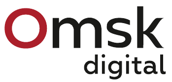
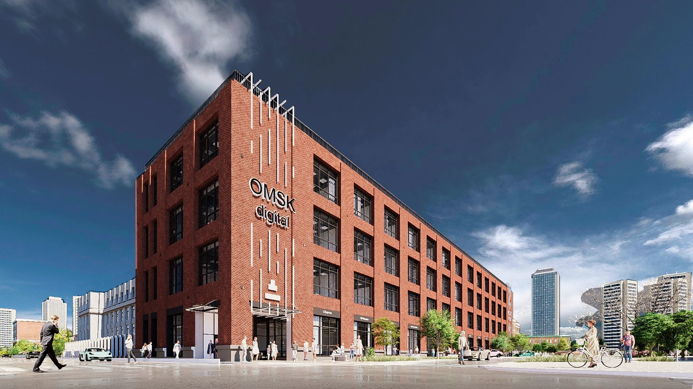
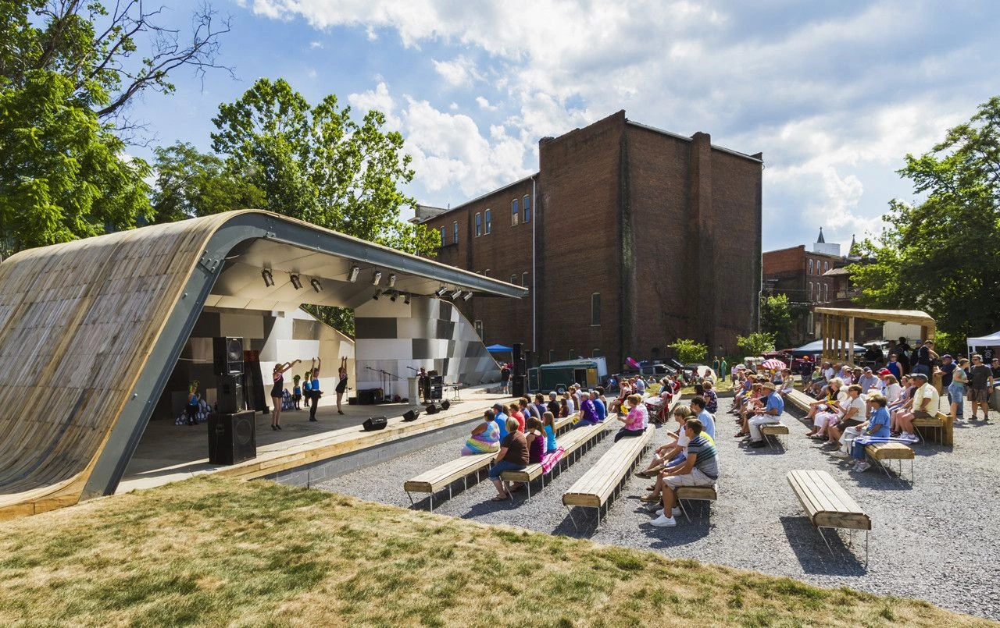
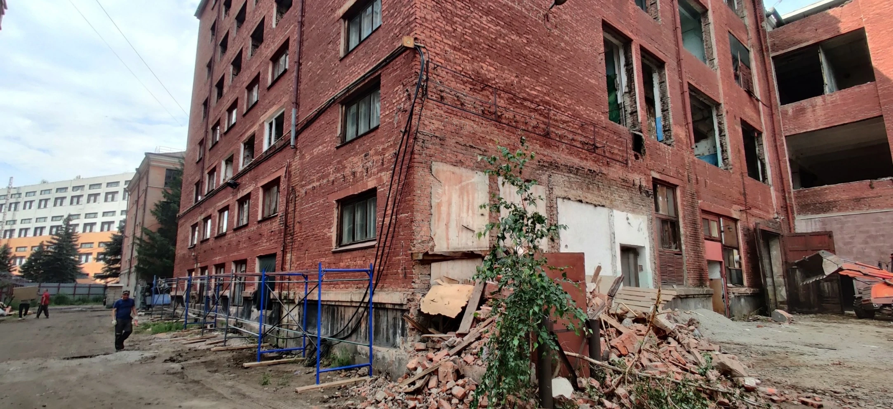

Найти своё
место для роста.
Обсудите размещение, нужные сервисы и возможности сотрудничества с будущими соседями.
Стать резидентом ↗
Обсудить сотрудничествоТЕХНОПАРК В ОМСКЕ
ПРОЕКТ В РАЗВИТИИ / 01
Для компаний, которые
создают технологии.
И людей, которые за ними.

Визуализация проекта · слайд 1Сильные команды растут рядом.
Омск Диджитал задуман как площадка для высокотехнологичных и ИТ-компаний, специалистов интеллектуального труда и креативных команд, которые используют технологии.
Здесь планируется объединить рабочие пространства, профессиональное сообщество и сервисы развития бизнеса. Чтобы находить партнёров, собирать команды и вместе решать задачи заказчиков.
Обсудите размещение, нужные сервисы и возможности сотрудничества с будущими соседями.
Стать резидентом ↗Расскажите о технологической задаче и требованиях к исполнителю. Это основа для обсуждения сотрудничества.
Обсудить задачу ↗Предложите совместную программу, отраслевой проект или другой формат взаимодействия с площадкой.
Предложить сотрудничество ↗Офисы, коворкинг и общий зал.
Всё начинается с пространства,
которое работает на команду.
площадь корпуса
конгрессно-выставочный зал
для работы и встреч
Проектные параметры из презентации, слайды 2 и 14–18. Готовность и доступность помещений требуют подтверждения.
Рабочие помещения на четырёх этажах. По проекту: 458 м² офисов на первом этаже, 1 976 м² на втором, 1 850 м² на третьем, 2 000 м² на четвёртом.
01Ресепшн и выставочное пространство, конгрессно-выставочный зал, инфраструктурные арендаторы, офисы, переговорные и серверные.
02Офисы резидентов, переговорные и серверные.
03Офисы, коворкинг 44 м², инновационно-технологический центр 54 м², переговорные и серверные.
04Офисы резидентов и серверные.
От знакомства к общему проекту.
Команда разработчиков, инженерное бюро и креативная студия могут объединить свои компетенции под задачу заказчика. Технопарк задуман как место для таких встреч.
Ниже — планируемые направления работы. Их запуск и состав ещё нужно подтвердить.
Знакомства с предприятиями и обсуждение технологических задач.
Сотрудничество с вузами, поиск сотрудников и работа с молодыми командами.
Консультации по государственной поддержке и связанной с ней отчётности.
Услуги управляющей компании и партнёров. Состав и условия уточняются.
Деловые события, обмен опытом, обсуждение проектов и компетенций.
Неформальные встречи, командные и спортивные мероприятия.

Есть о чём поговорить.
Есть где встретиться.
Фотографии реконструкции и визуализации показывают разные этапы проекта.

Фотография из презентации, слайд 20.
Дата съёмки не указана.
Архитектурная визуализация, слайд 1.
Проектное решение.
Дата запуска и стоимость размещения уточняются. Условия сотрудничества будут опубликованы после согласования.
Обсудить интерес к проекту ↗Улица Чернышевского, 2
Адрес указан в презентации проекта.
Маршрут в Яндекс Картах ↗Выберите свою точку отправления в Яндекс Картах. Маршруты и время пути зависят от места и времени поездки.
Ближайшие остановки и пеший маршрут до входа уточняются.
06 / ДАВАЙТЕ ЗНАКОМИТЬСЯ
Ищете место для команды, исполнителя для задачи или возможность сотрудничества? Расскажите, что вам нужно.
Локальная версия для согласования.